Can your site work on IE3?
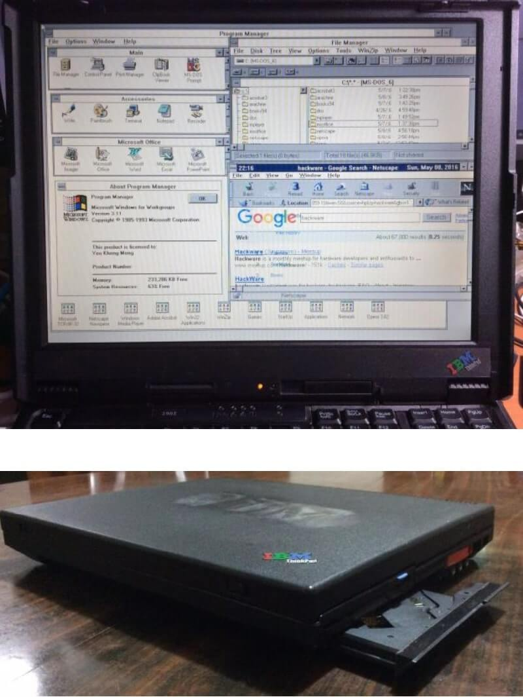
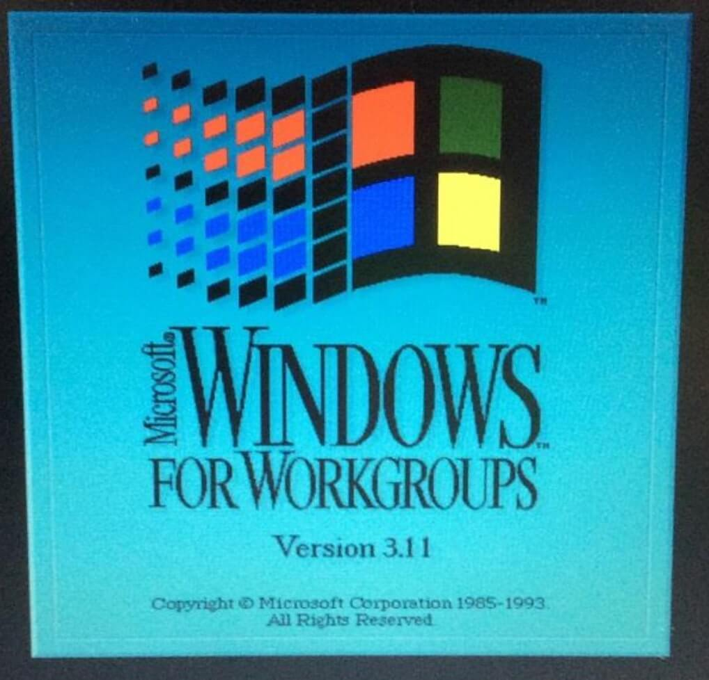
Talk.CSS #39 (22 May 2019)
By:
Chen Hui Jing @hj_chen
Yeo Kheng Meng @yeokm1
Agenda
- Background
- Quick Live Demo
- How I got DOS 6.22, Win3.1 and networking to work
- Live coding/debugging
Motivation
- Hack && Tell Singapore - March 2019
Team 486 at Super Silly Hackathon (Dec 2017)
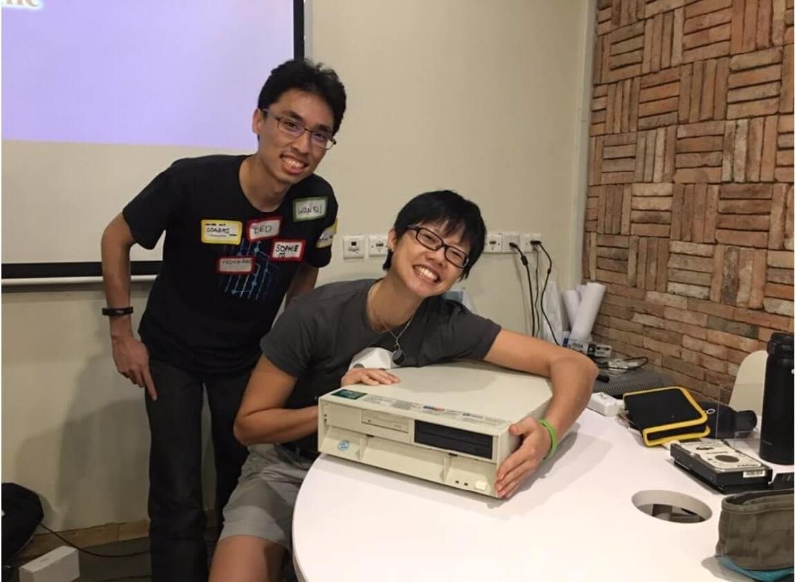
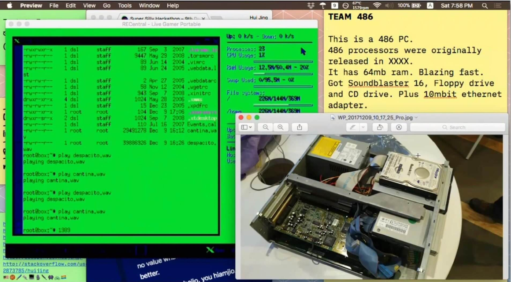
- Huijing and I
- 486 PC + Damn Small Linux + Web Page Hosting + Playing Music
What is Internet Explorer 3 (IE3)?
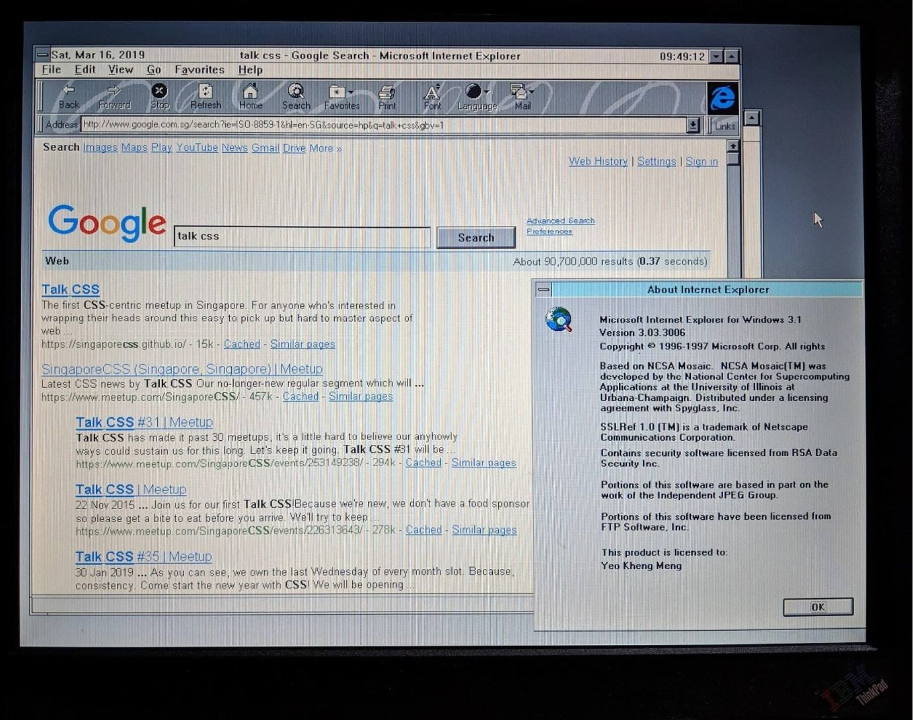
- First released in 1996
- Final Update (1998): 3.03 SP1, 3.03.3006
- Supported OSes:
- Windows 3.1, 95, NT3.x, NT 4.0
- System 7
- Mac OS 8
- First browser to support CSS
- https://www.w3.org/Style/CSS/msie/
So what is Windows 3.1x?
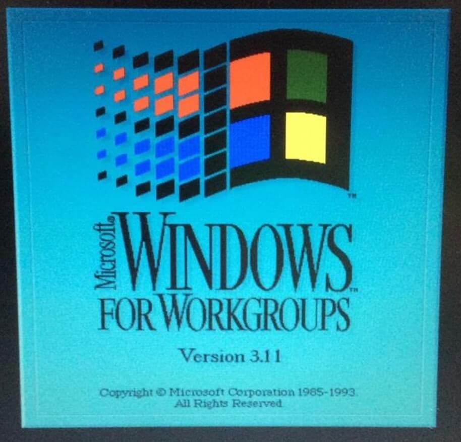
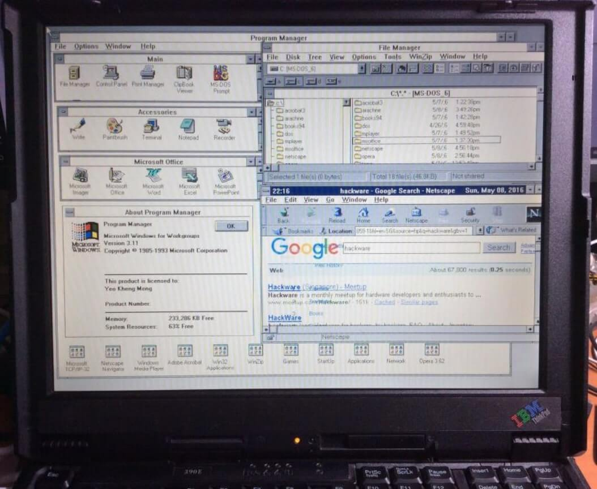
- Windows 3.1x is a series of 16-bit operating systems by Microsoft
- Windows 3.1 was released on April 6, 1992
- Windows for Workgroups 3.11 was released on August 11, 1993
- WFW first to have inbuilt networking facilities
- All Windows 3.1x versions requires ≥MS-DOS 3.1 to be installed first
- https://en.wikipedia.org/wiki/Windows_3.1x
Microsoft Timeline of DOS/Windows
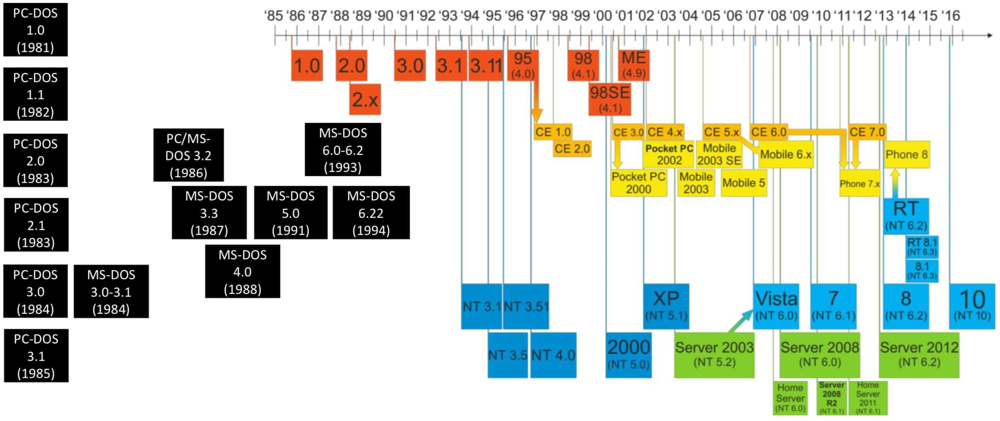- New Technology (NT) multi-user OS
- DOS-based and Windows 9x single-user OS
- PC-DOS (IBM Personal Computer Disk Operating System)
- MS-DOS (Microsoft Disk Operating System)
- Source 1: https://en.wikipedia.org/wiki/Timeline_of_Microsoft_Windows
- Source 2: https://en.wikipedia.org/wiki/Timeline_of_DOS_operating_systems
Quick demo
IBM Thinkpad 390e
- Released in 1999 with Windows 98
- Win3.1 drivers provided by IBM
- Specifications
- Intel Mobile Pentium II 300Mhz
- Intel 440BX chipset
- NeoMagic Media256AV 2.5MB VRAM
- 384MB SDRAM
- ESS Solo-1 Audio
- 13.1” 1024×768
- PATA hard drive (I used an CF card with CF-PATA converter)
- CDROM + Floppy combo
- Serial, Parallel, PS/2, USB 1.0, IrDA
- 2x Cardbus slots
- No Ethernet
- 4.5cm thickness
- 3.4kg weight
- US$2700 (1999) = US$4100 (2018) = SG$5600 (2018)
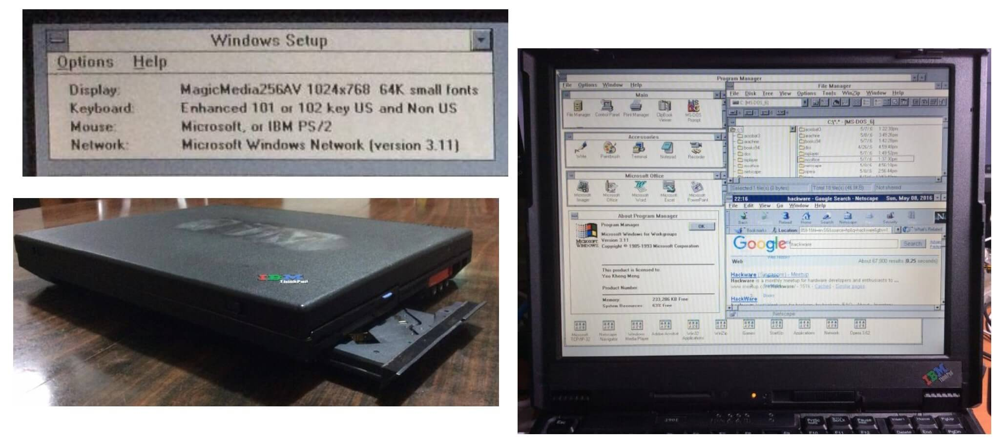


Installing DOS 6.22 and Win 3.1
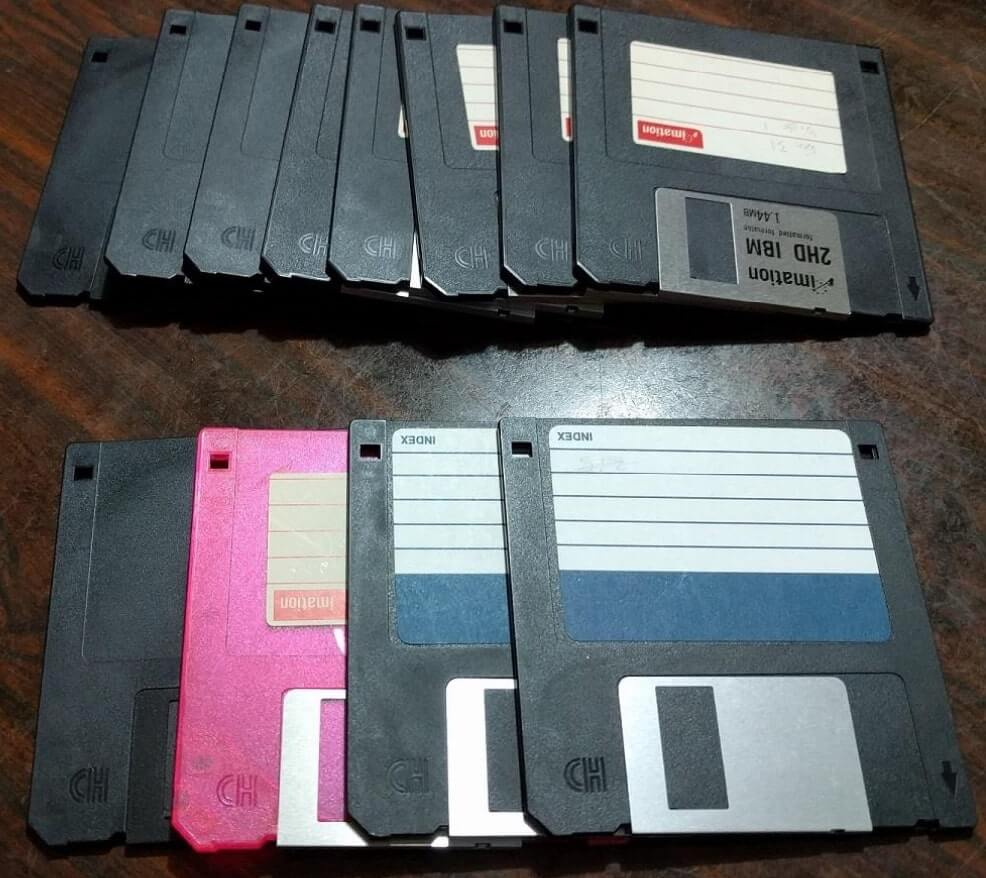
- 4x DOS 6.22 diskettes
- 8x WFW 3.11 diskettes
- Mac OS X El Capitan onwards does not support USB Floppy drives
- Download links:
CONFIG.SYS and AUTOEXEC.BAT
- Important DOS configuration files
- CONFIG.SYS
- Loads drivers on startup
- HIMEM.SYS: Extended Memory Manager
- DOS=HIGH: Load DOS to HMA to save conventional memory
- CDROMDRV.SYS: Toshiba CD driver
- POWER.EXE: Sends x86 HALT instruction to save CPU power when idle
- AUTOEXEC.BAT
- Stands for AUTOmatic EXECution
- Batch file that starts at end of DOS boot process
- SMARTDRV.EXE: Disk caching
- MSCDEX.EXE: Assign CD drive letter to driver
- DOSKEY.COM: Terminal history, auto-completion
- CTMOUSE: Modern DOS mouse driver for PS/2 mouse
Network Connection Attempt 1
- PCMCIA/Cardbus network adapter
- Xircom Realport Cardbus Ethernet 10/100
- IBM’s Cardbus slot DOS drivers DID NOT WORK!!!
Network Connection Attempt 2
- Parallel Port network adapter
- XircomPocketEthernetPE3-10BT
- 10Mbps
- Powered by PS/2 passthrough cable
- Wifi-Ethernet Bridge
- TP-Link TL-WR702N
- 100Mbps
- 802.11n
- DNS needs manual configuration
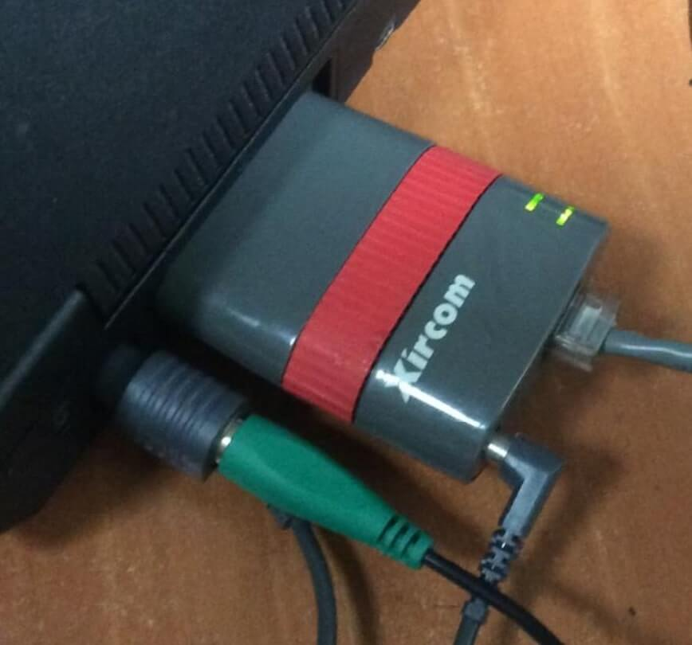


Fun fact, the presentation was done on the Windows 3.1 machine with Powerpoint 4. Because we could.